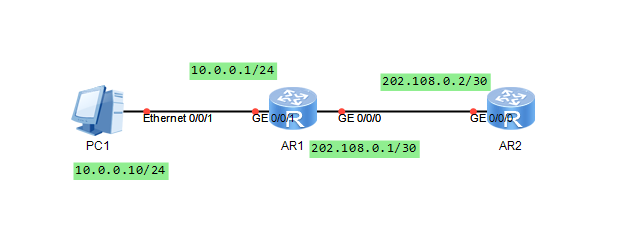

一、HDLC
全称高级数据链路控制(High-Level Data Link Control),标准的HDLC不仅用于点到点的连接，还可以用于点到多点的连接环境。
1）HDLC的配置
查看端口状态：
1
| display interface s0/0/0
|
调整轮询时间：
1
| dis interface serial 0/0/0
|
二、PPP
全称是串行线路互联网协议(Serial Line Internet Protocol)。其就是对IP数据包进行封装，让IP数据包能够通过串行线路和调制解调器线路进行传输。
1）PaP认证
认证方路由器：
1
| local-user {name} password cipher {text}
|
1
| local-user {name} service-type ppp
|
1
| ppp authentication-mode pap
|
被认证方：
1
| ppp pap local-user {name} password cipher {text}
|
三、PPPoE
全称PPPoE（PPP over Ethernet）
1）、PPPoE的配置
服务端的配置命令解释：
| 配置命令 |
配置命令 |
| ip pool [ip-pool-name] |
使用系统视图命令创建IP地址池，并进入地址池视图 |
| network [ip-addredd]{mask/make-length} |
使用地址池视图命令指定地址池中的IP地址范围，一个地址池中只能配置一个IP地址段 |
| gateway-list ip-addredd |
使用地址池视图命令指定地址池的网关地址 |
| inter virtual-template [vt-number] |
使用系统视图命令创建虚拟接口，并进入虚拟接口模版视图。编号范围[0-1024] |
| ip addredd [ip-address]{mask/mask-length |
使用虚拟接口模版视图命令为虚拟接口模版配置IP地址 |
| remote address pool [pool-name] |
使用虚拟接口模版视图命令为PPPoE客户端分配IP地址 |
| interface [interface-type interface-number] |
使用系统视图命令进入接口视图 |
| pppop-server bind virtual-template [vt-number] |
使用接口视图命令把虚拟接口模版绑定在ar2路由器上，同时启用PPPoE服务器功能 |
客户端的配置命令解释：
| 配置命令 |
解释 |
| interface dialer [number] |
使用系统视图命令创建虚拟拨号接口，并进入虚拟拨号接口视图 |
| dialer user [user-name] |
使用虚拟拨号接口视图命令指定拨号用户的用户名 |
| dialer bundle [number] |
使用虚拟拨号接口视图指定拨号绑定关系编号 |
| ip address ppp-negotiate |
使用虚拟拨号接口视图命令指定从AR2那里学习IP地址0 |
| interface interface-type [interface-number] |
使用系统视图命令进入接口视图 |
| pppoe-client dial-bundle-number [number] |
使用接口视图命令启用pppoe客户端功能，并调用拨号绑定关系 |
拓扑图：

AR2的配置：
Info:It’s successful to create an IP address pool.
1
| network 202.108.0.0 mask 255.255.255.252
|
1
| gateway-list 202.108.0.2
|
1
| inter virtual-template 10
|
1
| ip address 202.108.0.2 255.255.255.252
|
1
| remote address pool name
|
1
| pppop-server bind virtual-template 10
|
AR1的配置：
1
| ip address ppp-negotiate
|
1
| pppop-client dial-bundle-number 10
|
AR1上查看已经获得的ip地址
1
| display ip interface brief dialer 10
|
1
| display pppop-client session summary
|
AR2上查看PPPoE会话
1
| display pppop-server session all
|